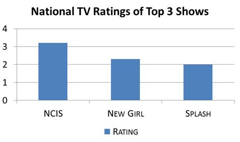
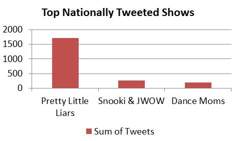

<!--I completed this project for an Undergraduate course on web GIS...BACK IN 2013!
Enjoy browsing what people were watching back in 2013. When The Walking Dead was all the rage.
Though I wrote most of this code, there may be bits and pieces I copied and adapted from online tutorials and StackOverflow.

By Andrea Minano Goldring-->
<!DOCTYPE html>
<html>
<head>
	<title>Mapping TV Ratings with Tweets</title>
	<meta charset="utf-8" />

	<meta name="viewport" content="width=device-width, initial-scale=1.0">

	<link rel="stylesheet" href="https://unpkg.com/leaflet@1.9.4/dist/leaflet.css" integrity="sha256-p4NxAoJBhIIN+hmNHrzRCf9tD/miZyoHS5obTRR9BMY=" crossorigin=""/>
    <script src="https://unpkg.com/leaflet@1.9.4/dist/leaflet.js" integrity="sha256-20nQCchB9co0qIjJZRGuk2/Z9VM+kNiyxNV1lvTlZBo=" crossorigin=""></script>
	<!--<link rel="stylesheet" href="http://cdn.leafletjs.com/leaflet-0.7.3/leaflet.css" />-->
	<!--[if lte IE 8]><link rel="stylesheet" href="http://cdn.leafletjs.com/leaflet-0.4/leaflet.ie.css" /><![endif]-->
	<script type="text/javascript" src="https://www.google.com/jsapi"></script>
    <script type="text/javascript">
	 		function reverseValue(value){
			if (value == 1){return 'NCIS';}
			else if (value == 2){return 'Top Gear, New Girl, NCIS';}
			else if (value == 3){return 'Justified';}
			else if (value == 4){return 'Dance Moms, Dancing with the Stars';}
			else if (value == 5){return 'Snooki & JWOWW, NCIS';}
			else if (value == 6){return 'Top Gear, Dance Moms, NCIS';}
			else if (value == 7){return 'New Girl, NCIS';}
			else if (value == 8){return 'Pretty Little Liars, Snooki & JWOWW';}
			else if (value == 9){return 'The Bad Girls Club, Dancing with the Stars, Snooki & JWOWW';}
			else if (value == 10){return 'Dancing with the Stars';}
			else if (value == 11){return 'Pretty Little Liars';}
			else if (value == 12){return 'Dance Moms, Justified';}
			else if (value == 13){return 'Pretty Little Liars, Snooki & JWOWW, NCIS';}
			else if (value == 14){return 'Snooki & JWOWW';}
			else if (value == 15){return 'Dance Moms, NCIS';}
			else if (value == 16){return 'The Bad Girls Club, Dance Moms, Dancing with the Stars, Snooki & JWOWW, Justified';}
			else if (value == 17){return 'Dance Moms';}
			else if (value == 18){return 'Dance Moms, New Girl, NCIS';}
			else if (value == 19){return 'Dance Moms, Snooki & JWOWW';}
			else if (value == 20){return 'New Girl, Justified';}
			else if (value == 21){return 'Snooki & JWOWW, Justified';}
			else if (value == 22){return 'Dancing with the Stars, Snooki & JWOWW';}
			else if (value == 23){return 'New Girl';}
			else if (value == 24){return 'Mindy Project, New Girl';}
			else if (value == 25){return 'Dance Moms, Dancing with the Stars, New Girl';}
			else if (value == 26){return 'Dance Moms, New Girl';}
			else {return 'Others';}
		}
	 
      function drawChart(in_array) {
		var arr = new Array(40);
		arr = [['TV Show', 'Number of Tweets']];
		var count = 1;
		var name;
		var name_len;
		var num_var;
		for (var i = 0; i < in_array.length; i++){
			name = reverseValue(in_array[i][0]);
			num_var = in_array[i][1];
			name_len = name.split(", ");
			for (var j = 0; j < name_len.length; j++){
				arr[count] = [name_len[j], num_var];
				count = count + 1;
			}
		}
		
		var data = google.visualization.arrayToDataTable(arr);

        var chart = new google.visualization.PieChart(document.getElementById('chart_div'));
        chart.draw(data, {title: 'Number of Tweets per TV Show'});
      }
	  
      google.load("visualization", "1", {packages:["corechart"]});
      google.setOnLoadCallback(drawChart);
    </script>
	<style>
	
		body {
		background: #000000;
		}
		
		#map {
		position: fixed; 
		top: 0; 
		left: 0; 
	
		/* Preserve aspet ratio */
		min-width: 100%;
		min-height: 100%;
		}
		
		.popup {
		width: 800px;
		}
		
		h3 {
		text-align: center;
		}
		h4 {
		font: 14px Courier; 
		text-align: center;
		color: #FF3300;
		}
		
		h5 {
		text-align: center;
		font: 12px Courier;
		}

		h6 {
		text-align: right;
		font: 12px Courier;
		}
		
		A:link {font: verdana; font-size: 14px; font-weight: bold; color: #000000; text-decoration: none}
		A:visited {font: verdana; font-size: 14px; font-weight: bold; color: #000000; text-decoration: none}
		A:active {font: verdana; font-size: 14px; font-weight: bold; color: #000000; text-decoration: none}
		A:hover {font: verdana; font-size: 14px; font-weight: bold; color: #FF6600}
		
		.info {
			padding: 6px 8px;
			text-align: center;
			font: 14px/16px Arial, Helvetica, sans-serif;
			background: white;
			background: rgba(255,255,255,1);
			box-shadow: 0 0 15px rgba(0,0,0,0.2);
			width: 320px;

		}

		.info2 {
			padding: 6px 8px;
			font: 14px/16px Arial, Helvetica, sans-serif;
			border-radius: 5px;
		}
		
		.info h2 {
			margin: 0 0 5px;
			color: #000000;
		}
		
		.legend {
			text-align: left;
			line-height: 18px;
			bottom: 25px;
			color: #555;
		}
		.legend i {
			width: 18px;
			height: 18px;
			float: left;
			margin-right: 8px;
			opacity: 0.7;
		}
	</style>
</head>
<body>
	<div id="map"></div>
	
	<!--<script src="http://cdn.leafletjs.com/leaflet-0.7.3/leaflet.js"></script>-->
	<script src="data/tuesday.json"></script>
	<script src="data/tuesday/tuesday.json"></script>
	<script src="data/tuesday/tuesday_anubis.json"></script>
	<script src="data/tuesday/tuesday_badgirls.json"></script>
	<script src="data/tuesday/tuesday_cougar.json"></script>
	<script src="data/tuesday/tuesday_dancemoms.json"></script>
	<script src="data/tuesday/tuesday_dwts.json"></script>
	<script src="data/tuesday/tuesday_geordie.json"></script>
	<script src="data/tuesday/tuesday_justified.json"></script>
	<script src="data/tuesday/tuesday_kitchen.json"></script>
	<script src="data/tuesday/tuesday_mindy.json"></script>
	<script src="data/tuesday/tuesday_ncis.json"></script>
	<script src="data/tuesday/tuesday_newgirl.json"></script>
	<script src="data/tuesday/tuesday_prettylittle.json"></script>
	<script src="data/tuesday/tuesday_snooki.json"></script>
	<script src="data/tuesday/tuesday_topgear.json"></script>
	
	<script>
		//create map object and import basemap
		var map = L.map('map').setView([37.8, -88], 4);
		
		L.tileLayer('https://{s}.basemaps.cartocdn.com/light_nolabels/{z}/{x}/{y}.png', {
			maxZoom: 18,
			attribution: '&copy; <a href="https://www.openstreetmap.org/copyright">OpenStreetMap</a> contributors, &copy; <a href="https://carto.com/attribution">CARTO</a>',
		}).addTo(map);
		
		// title of the map
		var info = L.control();

		info.onAdd = function (map) {
			this._div = L.DomUtil.create('div', 'info');
			this.update();
			return this._div;
		};

		info.update = function (props) {
			this._div.innerHTML = "<h2>Tweet-Mapping TV Ratings<br>Tuesday, March 19, 2013</h2><br>" + 
			"<div class='info2 legend'><b>Top Tweeted TV Show</b><br><i style ='background:#000066'></i>Mindy Project, New Girl<br>" +
			"<i style ='background:#33CC66'></i>Pretty Little Liars<br>" +
			"<i style ='background:#FFCC33'></i>Pretty Little Liars, Snooki & JWOWW<br>" +
			"<i style ='background:#FF6600'></i>Pretty Little Liars, Snooki & JWOWW, NCIS<br>" +
			"<i style ='background:#FF6666'></i>Snooki & JWOWW<br>" +
			
			"<br>" +
			"" +
			
			"</div>";
		};
				   
				   
		info.addTo(map);

		var info2 = L.control();

		info2.onAdd = function (map) {
			this._div = L.DomUtil.create('div', 'info');
			this.update();
			return this._div;
		};

		info2.update = function (props) {
			this._div.innerHTML = "<a href='index.html'>MON  </a><a href='tuesday.html'>TUE  </a><a href='wednesday.html'>WED  </a><a href='thursday.html'>THU  </a><a href='friday.html'>FRI  </a><a href='saturday.html'>SAT  </a><a href='sunday.html'>SUN  </a>";
		};

		info2.addTo(map);
		
		function getValue(name){
			if (name == 'NCIS'){return 1;}
			else if (name == 'Top Gear, New Girl, NCIS'){return 2;}
			else if (name == 'Justified'){return 3;}
			else if (name == 'Dance Moms, Dancing with the Stars'){return 4;}
			else if (name == 'Snooki & JWOWW, NCIS'){return 5;}
			else if (name == 'Top Gear, Dance Moms, NCIS'){return 6;}
			else if (name == 'New Girl, NCIS'){return 7;}
			else if (name == 'Pretty Little Liars, Snooki & JWOWW'){return 8;}
			else if (name == 'The Bad Girls Club, Dancing with the Stars, Snooki & JWOWW'){return 9;}
			else if (name == 'Dancing with the Stars'){return 10;}
			else if (name == 'Pretty Little Liars'){return 11;}
			else if (name == 'Dance Moms, Justified'){return 12;}
			else if (name == 'Pretty Little Liars, Snooki & JWOWW, NCIS'){return 13;}
			else if (name == 'Snooki & JWOWW'){return 14;}
			else if (name == 'Dance Moms, NCIS'){return 15;}
			else if (name == 'The Bad Girls Club, Dance Moms, Dancing with the Stars, Snooki & JWOWW, Justified'){return 16;}
			else if (name == 'Dance Moms'){return 17;}
			else if (name == 'Dance Moms, New Girl, NCIS'){return 18;}
			else if (name == 'Dance Moms, Snooki & JWOWW'){return 19;}
			else if (name == 'New Girl, Justified'){return 20;}
			else if (name == 'Snooki & JWOWW, Justified'){return 21;}
			else if (name == 'Dancing with the Stars, Snooki & JWOWW'){return 22;}
			else if (name == 'New Girl'){return 23;}
			else if (name == 'Mindy Project, New Girl'){return 24;}
			else if (name == 'Dance Moms, Dancing with the Stars, New Girl'){return 25;}
			else if (name == 'Dance Moms, New Girl'){return 26;}
			else {return 9999;}
		}
		
		//create pop up window
		function onEachFeature_Tuesday(feature, layer) {
		if (feature.properties && feature.properties.tu_max1 && feature.properties.tu_max2 && feature.properties.tu_max3){
			var max1 = getValue(feature.properties.tu_max1);
			var max2 = getValue(feature.properties.tu_max2);
			var max3 = getValue(feature.properties.tu_max3);
			var other = getValue('Others');
			layer.bindPopup("<b><h3>" + feature.properties.NAME10 + "<br></h3>Most Popular TV Show(s): </b>" + feature.properties.tu_max1 + "<br><br><center><button onclick='drawChart([[" + max1 + ", " + feature.properties.tu_count1 + "],[" + max2 + ", " + feature.properties.tu_count2 + "],[" + max3 + ", " + feature.properties.tu_count3 + "],[" + other + ", " + feature.properties.tu_other + "]])'>Click for more info</button><div id='chart_div' style='width: 300px; height: 200px;'></center></div>");
		}
		else if (feature.properties.tu_max1 && feature.properties.tu_max2){
			var max1 = getValue(feature.properties.tu_max1);
			var max2 = getValue(feature.properties.tu_max2);
			var other = getValue('Others');
			layer.bindPopup("<b><h3>" + feature.properties.NAME10 + "<br></h3>Most Popular TV Show(s): </b>" + feature.properties.tu_max1 + "<br><br><center><button onclick='drawChart([[" + max1 + ", " + feature.properties.tu_count1 + "],[" + max2 + ", " + feature.properties.tu_count2 + "],[" + other + ", " + feature.properties.tu_other + "]])'>Click for more info</button><div id='chart_div' style='width: 300px; height: 200px;'></center></div>");
		}
		else if (feature.properties.tu_max1){
			var max1 = getValue(feature.properties.tu_max1);
			var other = getValue('Others');
			layer.bindPopup("<b><h3>" + feature.properties.NAME10 + "<br></h3>Most Popular TV Show(s): </b>" + feature.properties.tu_max1 + "<br><br><center><button onclick='drawChart([[" + max1 + ", " + feature.properties.tu_count1 + "],[" + other + ", " + feature.properties.tu_other + "]])'>Click for more info</button><div id='chart_div' style='width: 300px; height: 200px;'></center></div>");
		}
		else {
			layer.bindPopup("Sorry! No tweets were available for this state");
		}
		
		}
		
		//create pop up for tweet
		function onEachFeature_Tweet(feature, layer){
			layer.bindPopup('<h5>' + feature.properties.tweet + '<h6>-@' + feature.properties.user + '</h6>');
		}
		//tuesday
		
		function getColor_Tuesday(d) {
			return d == 'Mindy Project, New Girl' ? '#000066' :
				   d == 'Pretty Little Liars' ? '#33CC66' :
				   d == 'Pretty Little Liars, Snooki & JWOWW' ? '#FFCC33' :
				   d == 'Pretty Little Liars, Snooki & JWOWW, NCIS' ? '#FF6600' : 
				   d == 'Snooki & JWOWW' ? '#FF6666' :
							'#FFFFFF';
		}
		
		//style features
		function style_Tuesday(feature) {
			return {
				weight: 1,
				opacity: 1,
				color: '#424242',
				fillOpacity: 0.7,
				fillColor: getColor_Tuesday(feature.properties.tu_max1)
			};
		}
		

		//state json
		week_json_tuesday = new L.geoJson(all_week, {style: style_Tuesday, onEachFeature: onEachFeature_Tuesday});
		//tweet json
		all_tweets_json = new L.geoJson(all_tweets, {onEachFeature: onEachFeature_Tweet, pointToLayer: function (feature, latlng) {
				return L.circleMarker(latlng, {
					radius: 3,
					fillColor: "#ff7800",
					color: "#000",
					weight: 1,
					opacity: 1,
					fillOpacity: 0.8});
		}});
		
		anubis_json = new L.geoJson(anubis, {onEachFeature: onEachFeature_Tweet, pointToLayer: function (feature, latlng) {
				return L.circleMarker(latlng, {
					radius: 3,
					fillColor: "#52FF52",
					color: "#000",
					weight: 1,
					opacity: 1,
					fillOpacity: 0.8});
		}});
		
		badgirls_json = new L.geoJson(badgirls, {onEachFeature: onEachFeature_Tweet, pointToLayer: function (feature, latlng) {
				return L.circleMarker(latlng, {
					radius: 3,
					fillColor: "#F8FF2E",
					color: "#000",
					weight: 1,
					opacity: 1,
					fillOpacity: 0.8});
		}});
		
		cougar_json = new L.geoJson(cougar, {onEachFeature: onEachFeature_Tweet, pointToLayer: function (feature, latlng) {
				return L.circleMarker(latlng, {
					radius: 3,
					fillColor: "#FFA514",
					color: "#000",
					weight: 1,
					opacity: 1,
					fillOpacity: 0.8});
		}});
		
		dancemoms_json = new L.geoJson(dancemoms, {onEachFeature: onEachFeature_Tweet, pointToLayer: function (feature, latlng) {
				return L.circleMarker(latlng, {
					radius: 3,
					fillColor: "#CC8C25",
					color: "#000",
					weight: 1,
					opacity: 1,
					fillOpacity: 0.8});
		}});
		
		dwts_json = new L.geoJson(dwts, {onEachFeature: onEachFeature_Tweet, pointToLayer: function (feature, latlng) {
				return L.circleMarker(latlng, {
					radius: 3,
					fillColor: "#FF8E69",
					color: "#000",
					weight: 1,
					opacity: 1,
					fillOpacity: 0.8});
		}});
		
		geordie_json = new L.geoJson(geordie, {onEachFeature: onEachFeature_Tweet, pointToLayer: function (feature, latlng) {
				return L.circleMarker(latlng, {
					radius: 3,
					fillColor: "#FF1717",
					color: "#000",
					weight: 1,
					opacity: 1,
					fillOpacity: 0.8});
		}});
		
		justified_json = new L.geoJson(justified, {onEachFeature: onEachFeature_Tweet, pointToLayer: function (feature, latlng) {
				return L.circleMarker(latlng, {
					radius: 3,
					fillColor: "#FF1778",
					color: "#000",
					weight: 1,
					opacity: 1,
					fillOpacity: 0.8});
		}});
		
		kitchen_json = new L.geoJson(kitchen, {onEachFeature: onEachFeature_Tweet, pointToLayer: function (feature, latlng) {
				return L.circleMarker(latlng, {
					radius: 3,
					fillColor: "#B617FF",
					color: "#000",
					weight: 1,
					opacity: 1,
					fillOpacity: 0.8});
		}});

		mindy_json = new L.geoJson(mindy, {onEachFeature: onEachFeature_Tweet, pointToLayer: function (feature, latlng) {
				return L.circleMarker(latlng, {
					radius: 3,
					fillColor: "#3617FF",
					color: "#000",
					weight: 1,
					opacity: 1,
					fillOpacity: 0.8});
		}});
		
		ncis_json = new L.geoJson(ncis, {onEachFeature: onEachFeature_Tweet, pointToLayer: function (feature, latlng) {
				return L.circleMarker(latlng, {
					radius: 3,
					fillColor: "#9B8DF7",
					color: "#000",
					weight: 1,
					opacity: 1,
					fillOpacity: 0.8});
		}});
		
		newgirl_json = new L.geoJson(newgirl, {onEachFeature: onEachFeature_Tweet, pointToLayer: function (feature, latlng) {
				return L.circleMarker(latlng, {
					radius: 3,
					fillColor: "#8DEDF7",
					color: "#000",
					weight: 1,
					opacity: 1,
					fillOpacity: 0.8});
		}});
		
		prettylittle_json = new L.geoJson(prettylittle, {onEachFeature: onEachFeature_Tweet, pointToLayer: function (feature, latlng) {
				return L.circleMarker(latlng, {
					radius: 3,
					fillColor: "#07B595",
					color: "#000",
					weight: 1,
					opacity: 1,
					fillOpacity: 0.8});
		}});
		
		snooki_json = new L.geoJson(snooki, {onEachFeature: onEachFeature_Tweet, pointToLayer: function (feature, latlng) {
				return L.circleMarker(latlng, {
					radius: 3,
					fillColor: "#0DA347",
					color: "#000",
					weight: 1,
					opacity: 1,
					fillOpacity: 0.8});
		}});
		
		topgear_json = new L.geoJson(topgear, {onEachFeature: onEachFeature_Tweet, pointToLayer: function (feature, latlng) {
				return L.circleMarker(latlng, {
					radius: 3,
					fillColor: "#F2CA16",
					color: "#000",
					weight: 1,
					opacity: 1,
					fillOpacity: 0.8});
		}});
		
		//add group layers to the map
		var week_layer_tuesday = new L.LayerGroup();
		week_layer_tuesday.addLayer(week_json_tuesday);

		var all_tweets_layer = new L.LayerGroup();
		all_tweets_layer.addLayer(all_tweets_json);
		
		var anubis_layer = new L.LayerGroup();
		anubis_layer.addLayer(anubis_json);
		
		var badgirls_layer = new L.LayerGroup();
		badgirls_layer.addLayer(badgirls_json);
		
		var cougar_layer = new L.LayerGroup();
		cougar_layer.addLayer(cougar_json);
		
		var dancemoms_layer = new L.LayerGroup();
		dancemoms_layer.addLayer(dancemoms_json);
		
		var dwts_layer = new L.LayerGroup();
		dwts_layer.addLayer(dwts_json);

		var geordie_layer = new L.LayerGroup();
		geordie_layer.addLayer(geordie_json);

		var justified_layer = new L.LayerGroup();
		justified_layer.addLayer(justified_json);
		
		var kitchen_layer = new L.LayerGroup();
		kitchen_layer.addLayer(kitchen_json);

		var mindy_layer = new L.LayerGroup();
		mindy_layer.addLayer(mindy_json);	

		var ncis_layer = new L.LayerGroup();
		ncis_layer.addLayer(ncis_json);

		var newgirl_layer = new L.LayerGroup();
		newgirl_layer.addLayer(newgirl_json);		

		var prettylittle_layer = new L.LayerGroup();
		prettylittle_layer.addLayer(prettylittle_json);	

		var snooki_layer = new L.LayerGroup();
		snooki_layer.addLayer(snooki_json);	

		var topgear_layer = new L.LayerGroup();
		topgear_layer.addLayer(topgear_json);
		
		map.addLayer(week_layer_tuesday);
		
		var otherLayers = {
		"All Tweets": all_tweets_layer,
		"House of Anubis": anubis_layer,
		"Bad Girls Club": badgirls_layer,
		"Cougar Town": cougar_layer,
		"Dance Moms": dancemoms_layer,
		"Dancing with the Stars": dwts_layer,
		"Geordie Shore": geordie_layer,
		"Justified": justified_layer,
		"Hell's Kitchen": kitchen_layer,
		"Mindy Project": mindy_layer,
		"NCIS": ncis_layer,
		"New Girl": newgirl_layer,
		"Pretty Little Liars": prettylittle_layer,
		"Snooki & JWOWW": snooki_layer,
		"Top Gear": topgear_layer
		};
		
		var layersControl = new L.Control.Layers(null, otherLayers, {position: 'topleft', collapsed: true, autoZIndex: false});

		map.addControl(layersControl);
	</script>
</body>
</html>